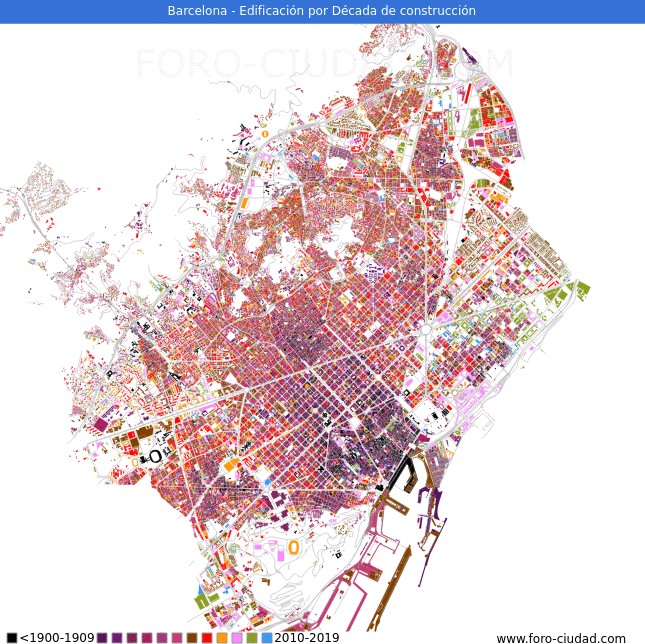
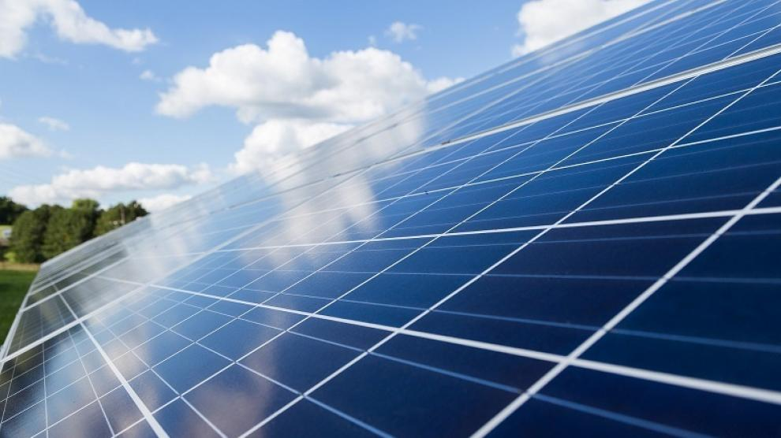
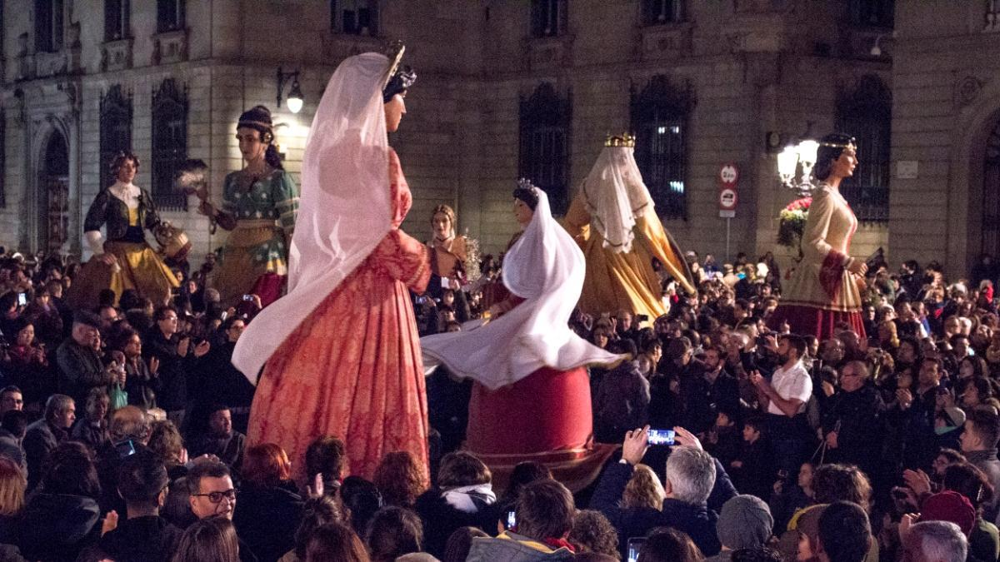

Historia
La historia de Barcelona se extiende a lo largo de 4000 años, desde finales del Neolítico, con los primeros restos hallados en el territorio de la ciudad, hasta la actualidad. El sustrato de sus habitantes aúna a los pueblos iberos, romanos, judíos, visigodos, musulmanes y cristianos. Como capital de Cataluña y segunda ciudad en importancia de España, la Ciudad Condal ha forjado su relevancia con el tiempo, desde ser una pequeña colonia romana hasta convertirse en una ciudad cosmopolita valorada internacionalmente por aspectos como su economía, su patrimonio artístico, su cultura, su deporte y su vida social.
Demografia
El número de habitantes en Barcelona capital es de 1.636.193, 539 habitantes menos que el en el año 2021. Con una densidad de habitantes de 16.144 hab/km2.
Lugares importantes

Las Ramblas es una calle del centro de Barcelona. Calle peatonal arbolada, se extiende a lo largo de 1,2 km conectando la Plaça de Catalunya en su centro con el Monumento a Cristóbal Colón en el Port Vell. La Rambla forma el límite entre
los barrios del Barri Gòtic al este y el Raval al oeste.
El paseo está lleno de gente de día y hasta altas horas de la noche. Está jalonado de quioscos de prensa, flores y otros por decidir que sustituyan a las antiguas paradas
de pequeños animales (principalmente aves), actores callejeros, cafeterías, restaurantes y comercios.
El Passeig de Gràcia es una de las avenidas principales y más famosas de Barcelona, debido a su importancia turística, áreas comerciales, negocios y un gran escaparate de obras destacadas de arquitectura modernista, como las edificaciones
de los arquitectos Antoni Gaudí y Lluís Domènech i Montaner, declaradas Patrimonio de la Humanidad.
La avenida está situada en la parte central de la ciudad, el Ensanche barcelonés, y conecta la plaza de Cataluña al este con la
calle Mayor de Gracia al oeste.
La plaza de Cataluña (en catalán, plaça de Catalunya) es una céntrica plaza de Barcelona, uno de los centros neurálgicos de la ciudad. Tiene una superficie de 5 hectáreas.
Constituye el punto de unión entre el núcleo viejo de la ciudad
y el Ensanche. De aquí parten importantes vías de la ciudad como la Rambla, el paseo de Gracia, la rambla de Cataluña o las rondas de la Universidad y de San Pedro, y la calle de Pelayo, así como la avenida de Portal del Ángel, la
gran arteria comercial de la ciudad, y antigua puerta de las murallas.
El Templo Expiatorio de la Sagrada Familia, conocido simplemente como la Sagrada Familia, es una basílica católica de Barcelona, diseñada por el arquitecto Antoni Gaudí. Iniciada en 1882, todavía está en construcción. Es la obra maestra
de Gaudí y el máximo exponente de la arquitectura modernista catalana.
Es uno de los monumentos más visitados de España, junto al Museo del Prado y la Alhambra de Granada, y es la iglesia más visitada de Europa tras la basílica
de San Pedro del Vaticano. Cuando esté finalizada, será la iglesia cristiana más alta del mundo.
Mapa
Se ubica a la orilla del mar Mediterráneo, a unos 120 km al sur de la cadena montañosa de los Pirineos y de la frontera con Francia, en un pequeño llano litoral limitado por el mar al este, la sierra de Collserola al oeste, el río Llobregat al sur y el río Besós al norte. Por haber sido capital del condado de Barcelona, se suele aludir a ella con la denominación antonomástica de «ciudad condal».
Noticias
Barcelona dobla la potencia fotovoltaica instalada en edificios en cuatro años
La potencia fotovoltaica instalada en edificios y en espacio público en la ciudad de Barcelona se ha duplicado en cuatro años. En concreto, se ha pasado de los 14.201 quilovatios potencia (kWp) que había en 2018 a los 28.907 kWp de ahora. Esto último equivale al consumo eléctrico de 15.710 hogares.
Fiestas Santa Eulàlia 2023
Barcelona celebra las fiestas de su 'otra' patrona, Santa Eulàlia, del 10 al 12 de febrero. La fiesta mayor invernal de la ciudad tiene como protagonistas la cultura popular y las actividades para el público familiar. Además, este año la festividad tendrán un plus añadido: la gegantona Laia celebra 25 años de existencia.